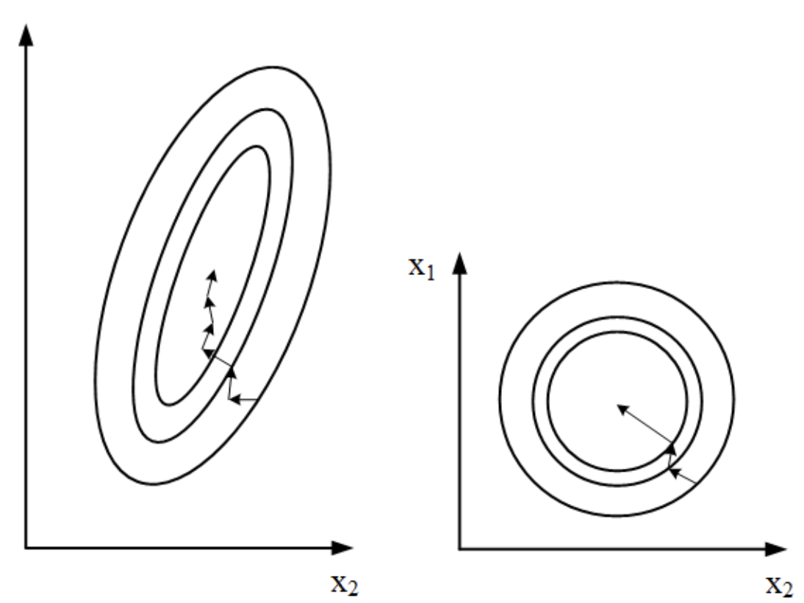
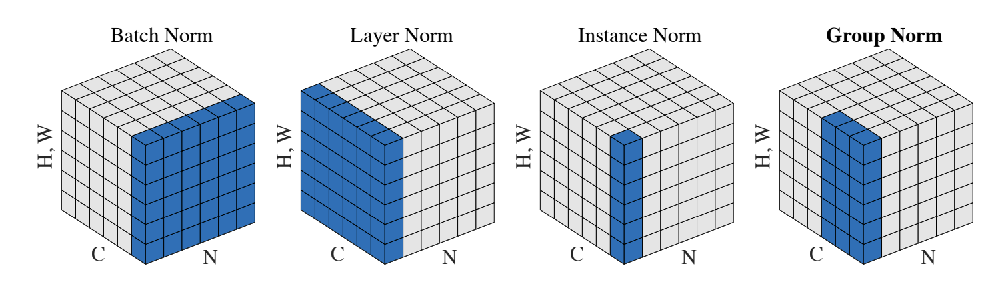

深度学习中常见的Normalization
常见的数据预处理方法
归一化
数据最常见的预处理的方法是归一化，即min-max scaling，其计算公式如下
标准化
标准化是把数据映射到均值为0，方差为1的特征空间，也被称作z-score归一化
中心化
中心化是把数据映射到[-1, 1]之间，其计算公式如下
数据预处理的目的：
- 把有量纲的数据转为无量纲数据，便于对不同量纲的数据进行对比，如在统计个人信息时身高（cm）的均值和方差总是比年龄（岁）差很多，这就导致身高信息对分析结果的影响会大于年龄
- 加速学习方法的收敛速度，一些学习方法使用梯度下降的方法来训练模型，数据归一化或标准化会使得参数搜索空间更加均匀，从而加快收敛速度，如图1所示

图1 原始数据的梯度下降过程（左），归一化数据的梯度下降过程（右）
深度学习常用归一化方法

图2 深度学习常用normalization方法
深度学习中使用的normalization方法可以使用下面这个公式表示，只是每种归一化方法操作的的维度不同，其中为均值，为标准差，为可学习的参数，为防止为0增加的最小值。
Batch Normalization
Batch Normalization (BN)层是一种对一个batch里面所有数据做归一化处理，如图2中Batch Norm 所示，计算过程如下：
示例
1 | # 建立一个batch_size=2, channel=3, width=4, height=4的矩阵 |
1 | tensor([[[[ 0., 1., 2., 3.], |
由BN的计算过程得知BN是对B，W，H做归一化，不同通道C独立计算， 因此，result[:, i, :, :]计算结果应该和(test[:, i, :, :] - test[:, i, :, :].mean()) / test[:, 0, :, :].std()一致
从下面的结果可以看出BN层的输出如何预期
1 | # num_features代表特征通道的大小 |
1 | 手动计算结果: |
使用BN时的一些问题
- 如果batch_size为1， 即m=1，此时方差为0，无法进行BN，并且batch size越小，归一化时的在不同batch之间差别越大，同时在进行分布式训练时也会有问题，因为是可学习的参数，如果每个机器的batch size不一致，则学习到的差别会很大
- 在循环神经网络中使用BN层也会有问题，因为在每个时间步输出不同的特征提取信息，因此需要对每个时间步单独做BN，这使得模型的复杂度变得很大。
Layer Normalization
BN是在每个批次的通道内做归一化，而Layer Normalization(LN)是在每个样本内跨特征进行归一化，LN 层经常使用在时间序列处理任务中，其操作的维度为C，W，H
示例
1 | result = nn.LayerNorm(normalized_shape=(3, 4, 4), elementwise_affine=False)(test) |
1 | 手动计算结果: |
Instance Normalization
LN 和 Instance Normalization(IN)层很相似，两者的差距在于, LN 在一个样本中的所有输入特征通道上做归一化，而IN 在一个通道内做归一化，其操作的维度为W，H
示例
1 | result = nn.InstanceNorm2d(num_features=3, affine=False)(test) |
1 | 手动计算结果: |
Group Normalization
Group Normalization(GN)是对每个训练样本的通道组进行归一化，其介于IN和LN之间，其操作的维度是C，W，H
示例
1 | # 为了更好的分组，将test按照通道复制四份 |
1 | torch.Size([2, 12, 4, 4]) |